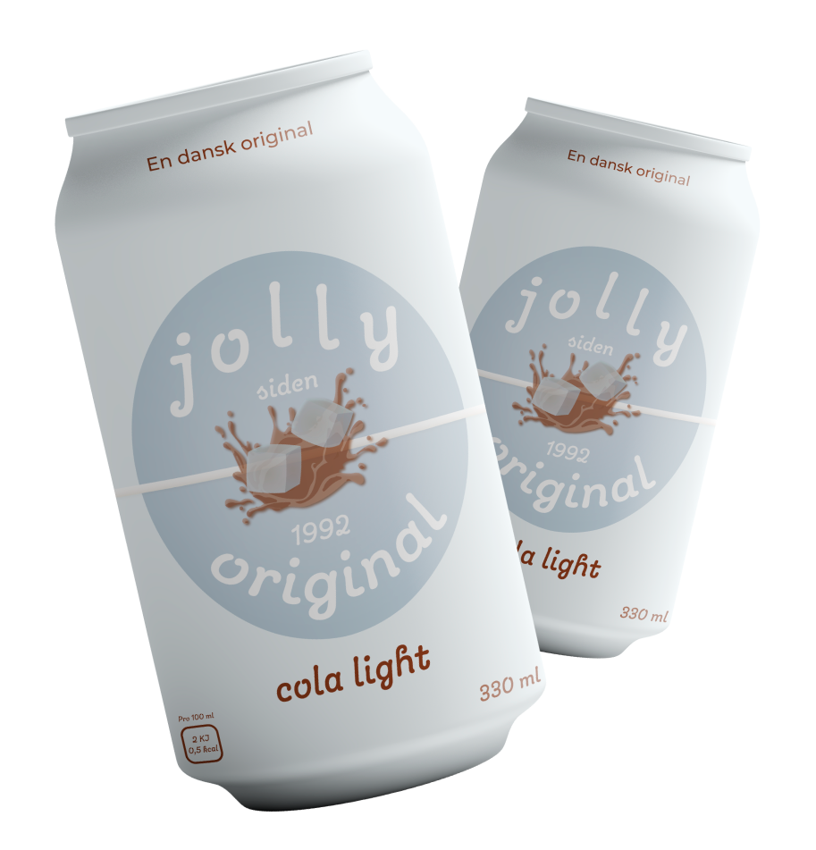

I 1959 kom den første jolly cola på markedet med målet om at udkonkurrere Coca-Cola på det danske marked. Det resulterede i den lækre jolly cola, vi alle kender i dag. I starten blev jolly cola produceret og markedsførst af Dansk Coladrik A/S, og allerede i 1960'erne var 60% af de colaer, der blev drukket i Danmark, danske. Colaen er allerede 62 år gammel, men er lige så god, som den altid har været.
I 1983 blev jolly colas sortiment for første gang udvidet, da jolly appelsin light kom på markedet. Foruden at være den første frugtsodavand, der blev lanceret, så er den også den første sukkerfrie sodavand. Med et sukkerfrit alternativ sikrer jolly, at der er en sodavand, som alle danskere kan drikke og have glæde af. Siden 1983 er jolly appelsin hurtigt blevet en af jollys mest populære sodavand.

Den originale danske cola light siden
1992
Som efterfølger til den populære jolly appelsin light, kom der i 1992 endnu et sukkerfrit alternativ - nemlig jolly cola light. Med samme gode smag som den traditionelle jolly cola, er jolly cola light et godt alterntiv til alle dem, der ønsker et produkt uden sukker. Siden 1992 er smagen af jolly cola light blevet forbedret løbende - og det har resulteret i den lækre jolly cola light, vi kender i dag.
Den originale danske time siden
2005
Efter jolly colas store succes med både cola, appelsin og cola light produkterne, blev sortimentet igen udviddet i 2005, da jolly time blev lanceret som jollys første sportssodavand. Med smag af frisk lime og citron er jolly time det sikre valg, når det kommer til sportssodavand. Den er en klassisker, og bliver den sidste nye jolly sodavand på markedet i nogle år, som stadig kan købes i dag.
De originale nyheder siden
Den originale abrikos
Den originale citron
Den originale eksotisk
Den originale ananas
2021
I 2021 står Vestfyen bag produktionen af jolly cola, og lancerer nu hele 4 nye smagsvarianter: jolly abrikos, jolly citron, jolly eksotisk og jolly ananas. De fire nye sodavand tilføjes til sortimentet og gør, at jolly cola nu tilbyder hele 8 forskellige smagsvariater af sodavand.
Det er en fordobling af de produkter, jolly cola indtil nu har haft på markedet. Med de fire nye smagsvarianter sikrer jolly cola i endnu højere grad, at der er en sodavand til enhver smag - både med og uden sukker. Den nye jolly abrikos har en frisk smag af abrikos, den
nye jolly citron har en syrlig smag af citron, den nye jolly eksotisk har en spændende smag af forskellige tropiske frugter og den nye jolly ananas har en sød smag af ananas. På trods af, at de nye sodavand er både eksotiske og nye, så er de stadig pære danske.
I 2021 står Vestfyen bag produktionen af jolly cola, og lancerer nu hele 4 nye smagsvarianter: jolly abrikos, jolly citron, jolly eksotisk og jolly ananas. De fire nye sodavand tilføjet til sortimentet og gør, at jolly cola nu tilbyder hele 8 forskellige smagsvariater af sodavand. Det er en fordobling af de produkter, jolly cola indtil nu har haft på markedet. Med de fire nye smagsvarianter sikrer jolly cola i endnu højere grad, at der er en sodavand til enhver smag - både med og uden sukker. På trods af, at de nye sodavand er både eksotiske og nye, så er de stadig pære danske.